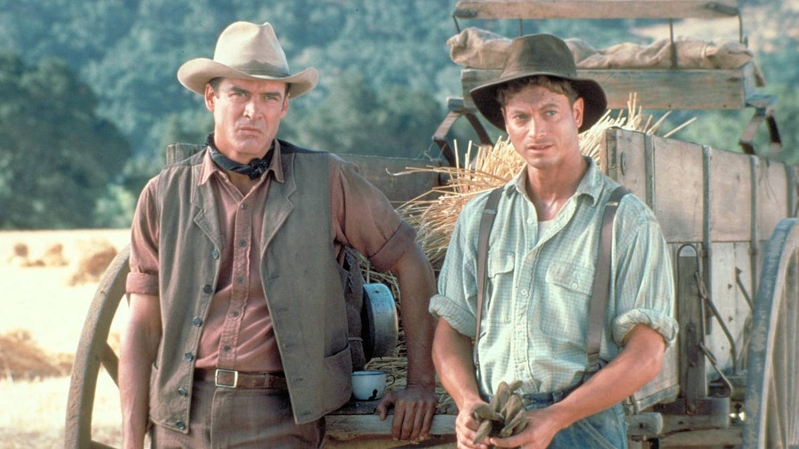
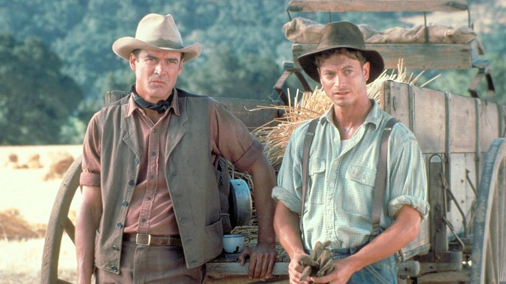

Summary:
At the end of the workday, Slim and George return to the bunkhouse. Slim has agreed to give one of the pups to Lennie, and George thanks him for his kindness, insisting that Lennie is “dumb as hell,” but is neither crazy nor mean. Slim appreciates George’s friendship with Lennie, saying that it is a welcome change in a world where no one ever “seems to give a damn about nobody.” George confides in Slim the story of how he and Lennie came to be companions. They were born in the same town, and George took charge of Lennie after the death of Lennie’s Aunt Clara. At first, George admits, he pushed Lennie around, getting him to do ridiculous things, such as jumping into a river even though he didn’t know how to swim. After watching his friend nearly drown, George felt ashamed of his behavior. Since that day, he has taken good care of his companion, protecting him even when he gets in trouble. For example, in Weed, the last town where they worked, Lennie wanted to touch the fabric of a girl’s red dress. When she pulled away, Lennie became frightened and held on to her until George hit him over the head to make him let go. The girl accused Lennie of rape, and George and Lennie had to hide in an irrigation ditch to escape a lynch mob.
Lennie comes into the bunkhouse, carrying his new puppy under his coat. George berates him for taking the little creature away from its mother. As Lennie returns the puppy to the litter, Candy and Carlson appear. Carlson begins to complain again about Candy’s dog, saying that it stinks and that it “ain’t no good to himself.” He urges Candy to shoot the animal. Candy replies that he has had the dog for too many years to kill it, but Carlson continues to pressure him. Eventually Slim joins in, suggesting that Candy would be putting a suffering animal out if its misery. Slim offers him a puppy and urges him to let Carlson shoot the dog. Another farmhand, Whit, enters and shows Slim a letter written by a man they used to work with published in a pulp magazine. The short letter praises the magazine. As the men marvel over it, Carlson offers to kill the dog quickly by shooting it in the back of the head. Reluctantly, Candy gives in. Carlson takes the dog outside, promising Slim that he will bury the corpse. After a few awkward moments of silence, the men hear a shot ring out, and Candy turns his face to the wall.
Crooks, the Black stable-hand, comes in and tells Slim that he has warmed some tar to put on a mule’s foot. After Slim leaves, the other men play cards and discuss Curley’s wife, agreeing that she will make trouble for someone; as George says, “She’s a jailbait all set on the trigger.” Whit invites George to accompany them to a local whorehouse the following night. Whit discusses the merits of old Susy’s place over Clara’s, it being cheaper and having nice chairs, but George comments that he cannot afford to waste his money because he and Lennie are trying to put together a “stake.” Lennie and Carlson come in. Carlson cleans his gun and avoids looking at Candy. Curley appears looking for his wife again. Full of jealousy and suspicion, he asks where Slim is. When he learns that Slim is in the barn, he storms off in that direction, followed by Whit and Carlson, who hope to see a fight.
George asks Lennie if he saw Slim with Curley’s wife in the barn, and Lennie says no. George warns his companion against the trouble that women cause, and then Lennie asks him to describe the farm that they hope to buy. As George talks, Candy listens and becomes excited by the idea of such a beautiful place. He asks if the place really exists. George is guarded at first, but soon says that it does and that the owners are desperate to sell it. Overcome with hope, Candy offers to contribute his life’s savings if they allow him to live there too. Since he is old and crippled, he worries that the ranch will let him go soon. The men agree that after a month of work at this ranch, they will have enough money saved to make a down payment on the house. George tells the other two not to tell anyone else about their plan. As they hear the other men’s voices approaching, Candy says quietly to George that he should have shot his old dog himself, and not let a stranger do it.
Slim, Curley, Carlson, and Whit return. Curley apologizes to Slim for his suspicions, and then the other men mock him. Knowing that Slim is too strong to be beaten in a fight, Curley looks to vent his rage elsewhere. He finds an easy target in Lennie, who is still dreaming of the farm and smiling with childlike delight. Though Lennie begs to be left alone, Curley attacks him. He throws several punches, bloodying Lennie’s face, and hits him in the gut before George urges Lennie to fight back. On George’s command, Lennie grabs Curley’s right hand and breaks it effortlessly. As Slim leads Curley away to a doctor, he warns him not to have George and Lennie fired, or he will be made the laughingstock of the ranch. Curley consents not to attempt to have them fired. George comforts Lennie, telling him that the fight was not his fault and that he has nothing to fear. Lennie’s only fear is that he will not be allowed to tend the rabbits on their farm. George assures him that he will.
(Visit Sparknotes)
 Of Mice and Men
Of Mice and Men